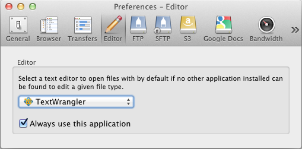
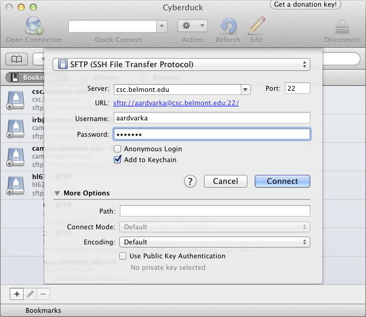
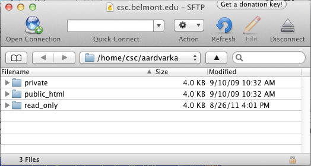
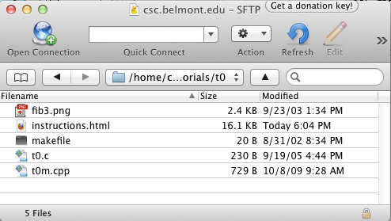
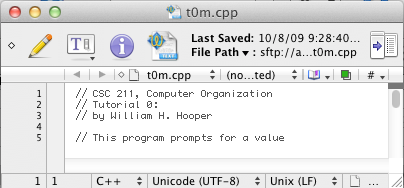

Editing remote files with CyberDuck and TextWrangler
- Install tools:
- Download and install TextWrangler from:
http://www.barebones.com/products/textwrangler/
- Download and install Cyberduck from:
http://cyberduck.ch/
- Launch Cyberduck, and choose Preferences... from
the Cyberduck menu. Configure Cyberduck to work with TextWrangler by
choosing it in the Edit Preferences, as shown below:

- Connect to the CSC File Server:
- Launch Cyberduck. The main connection window will show a list of previous
connections (which will be empty if you have not used Cyberduck before).
Click the button that says "Open Connection" and you should reach the
host selection window below:

- Enter csc.belmont.edu as the Host Name, and be sure
to select the SFTP Protocol. Cyberduck should select
Port number 22 automatically when you select SFTP. Enter
your User name and password, then click the Connect button.
The first time you do this, you will be prompted to accept the host key
from the CSC Server. Click Yes, and you should see a
new screen like the following:

- Navigate to the tutorial.
- Double-click the private folder. The address will change to "/home/csc/username/private/"
window will change to show the contents of your public folder.
- Double-click the csc2110 folder. Note the change in address and view.
- Double-click the tutorials folder. Note the change in address and view.
- Double-click the folder for your current tutorial. The address should read "/home/csc/username/private/csc2110/tutorials/tN/",
where N is the letter of your tutorial, and the folder window should
display the files for your tutorial. The folder for Tutorial 0 is shown
below as an example.

- Edit files:
- To edit a file, for example t0m.cpp, right-click the file and choose
Edit With -> TextWrangler from the pop-up menu. An
editor window appears
like the one below:

- Note the line numbers along the left side of the window. As you
debug files, line numbers will guide you to checkpoints and errors.
- The write icon ,
on the left side of the toolbar, is white when the file you are editing
is in sync with the copy on the Playstation 3, but turns black when you
make changes that have not yet been saved. Normally, you will want to
save early and often! Each time you save changes, the notification "File
Uploaded" should appear in the upper right corner of your Macintosh
desktop.
- You can open as many edit windows as you need to do the tutorial, and
leave them open as long as you need. Close
the edit windows when you are done; you
will be prompted to save any final changes.
- Disconnect
- Before you disconnect, be sure that all your remote TextWrangler windows
are closed. If you forget this step, changes to your TextWrangler
files may not be written to the PlayStation 3.
- Choose Quit from the Cyberduck menu. Cyberduck
will close without confirmation. To resume, return to step 2.1 .
- If you leave your computer while the Cyberduck window is open, it will
eventually disconnect from the server on its own. When you return, you
will be prompted to restore the connection; however, you will have to
wait for the connection to be re-established, and you may have to return
to Step 2.1 in order to complete the connection.